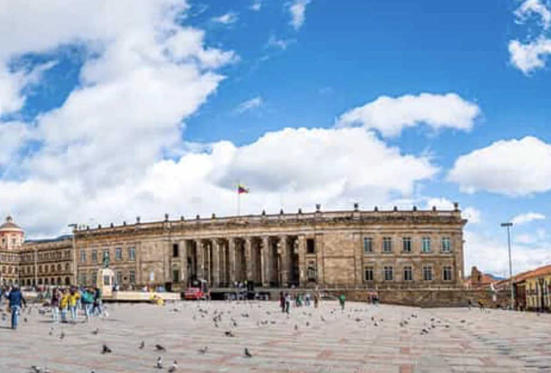
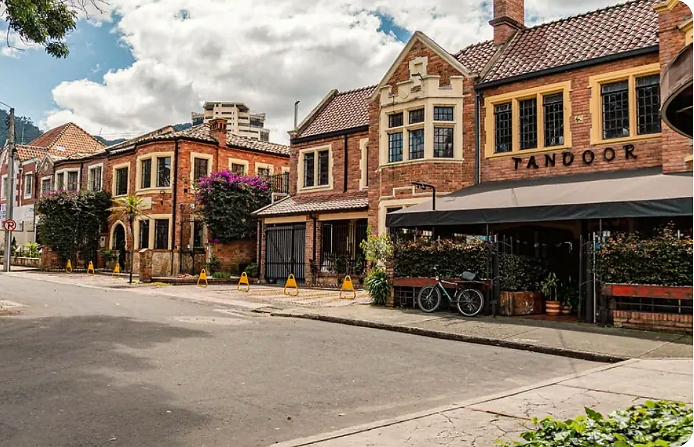
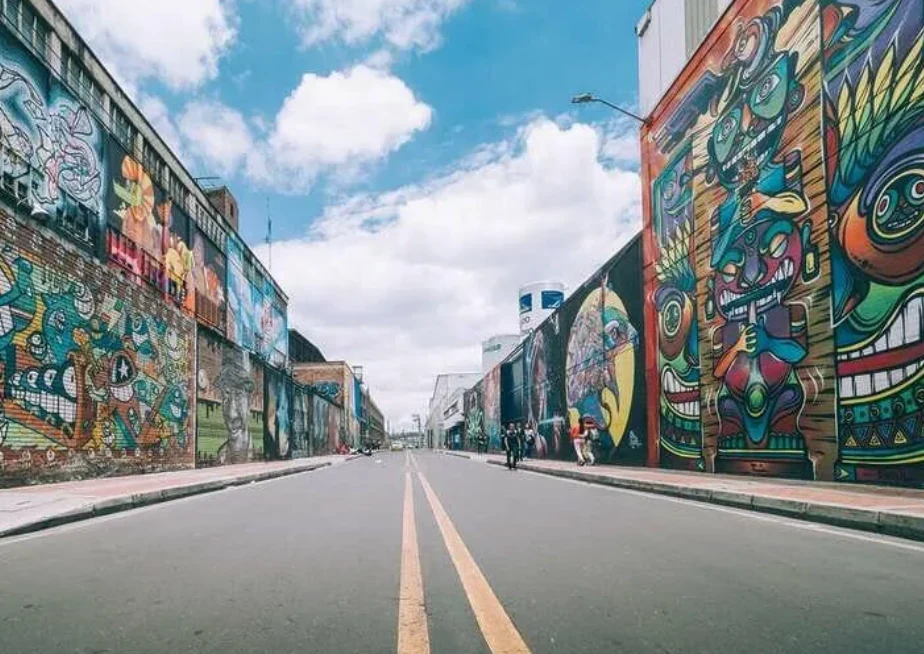
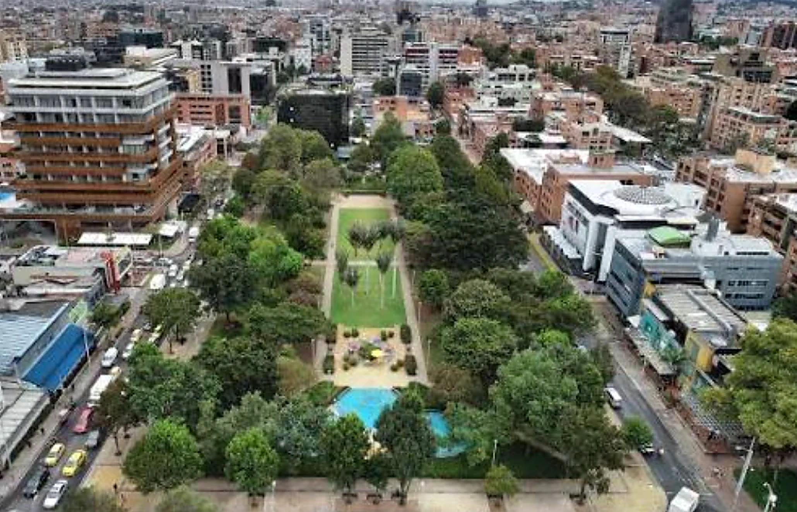
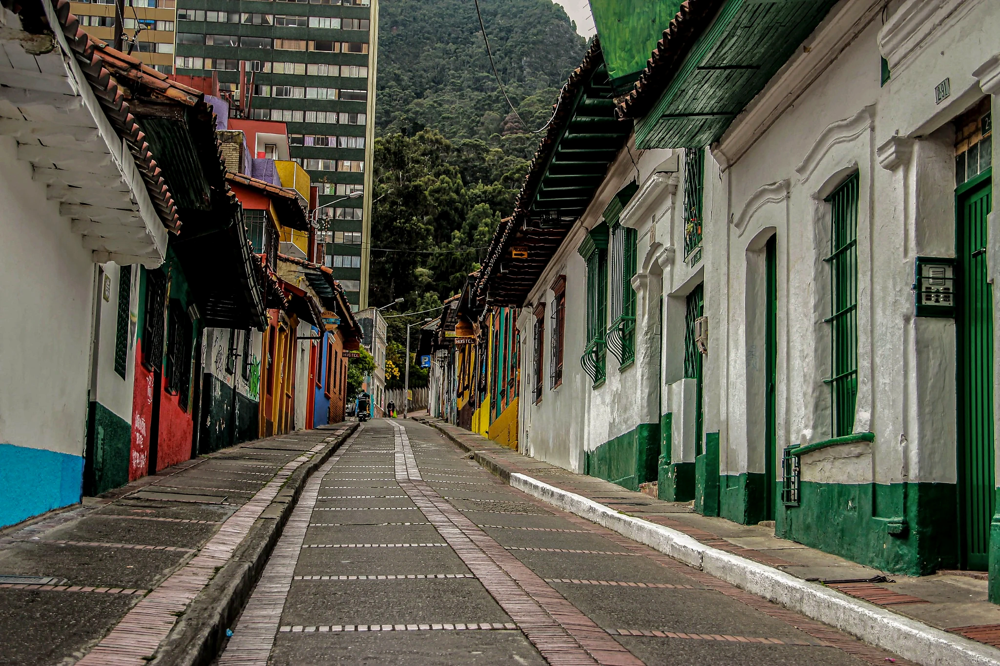
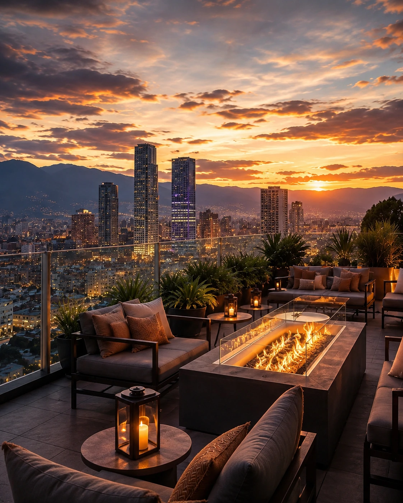
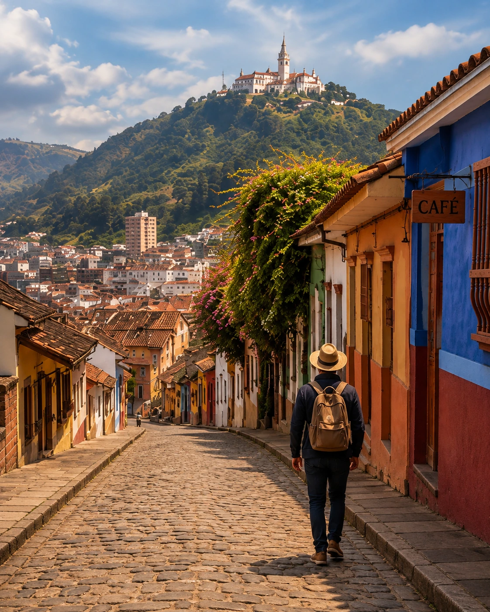

Historia + museos
Centro histórico
La Candelaria, Plaza de Bolívar, Museo del Oro y Botero dan contexto antes de los barrios contemporáneos.

La Candelaria, Plaza de Bolívar, Museo del Oro y Botero dan contexto antes de los barrios contemporáneos.
La vista ayuda a entender el tamaño de la ciudad. Elige una ventana de buena visibilidad y respeta la altitud.

Chapinero, Zona G, Parque 93 y Usaquén muestran una Bogotá muy distinta del centro histórico.

El arte urbano ayuda a leer política, identidad y cambio, especialmente alrededor de La Candelaria.
Bogotá está a unos 2.640 metros de altitud. No hace falta convertir el viaje en un protocolo médico, pero el primer día sí merece más margen. Hidrátate, evita una agenda atlética al llegar y observa cómo responde el cuerpo.
El clima puede cambiar durante el mismo día: mañana fresca, sol intenso cuando abre, lluvia pasajera y noches frías pueden aparecer en un mismo viaje. Capas ligeras y protección para la lluvia funcionan mejor que una maleta pensada para una sola estación.
El tercer factor es el tráfico. Agrupar atracciones por zona evita perder la ciudad dentro del coche. Centro histórico en un bloque, barrios del norte en otro y aeropuerto o excursiones tratados como desplazamientos propios.

En una ciudad grande y con tráfico pesado, la base cambia mucho la experiencia. Cuando el barrio esté decidido, compara la propiedad.
Haz La Candelaria, Plaza de Bolívar, Museo del Oro y Botero sin llevar el día al límite.
Sube con buena visibilidad y luego cambia de atmósfera en Chapinero, Zona G o Parque 93.
Quédate en la ciudad para grafitis y bicicleta o sal hacia la Catedral de Sal de Zipaquirá.

Seis zonas comparadas por rutina, movilidad y perfil.
Haz clic y mira
Ocho propiedades reales conectadas con la zona correcta.
Haz clic y mira
Centro, grafitis, bicicleta y Zipaquirá sin repetir el mismo tipo de día.
Haz clic y miraAlgunos enlaces pueden generar una comisión para Lipe Travel Show sin cambiar el precio para el viajero.